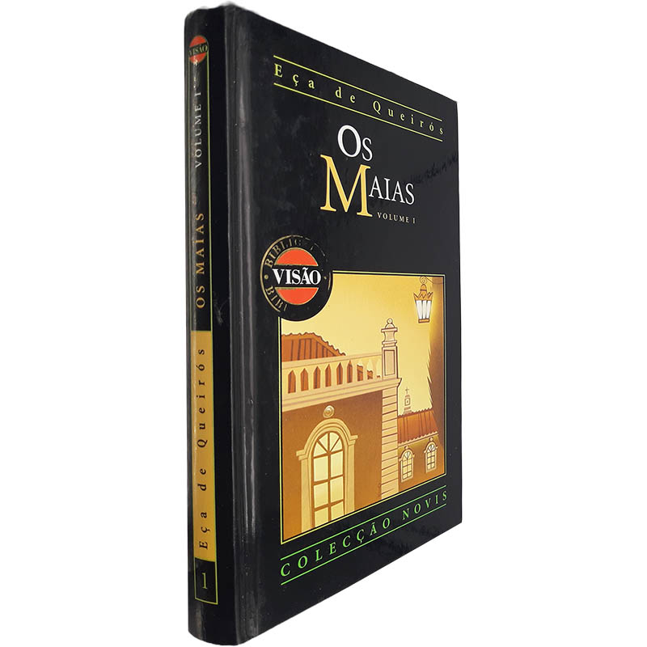
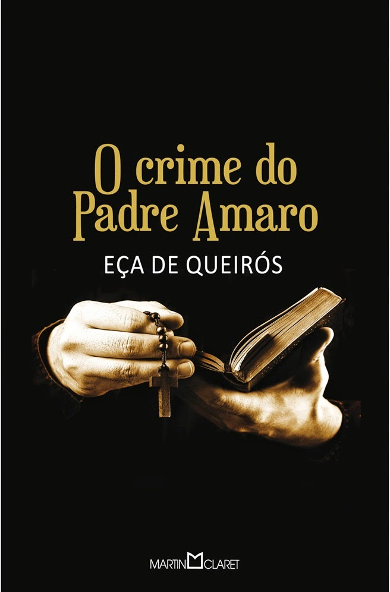
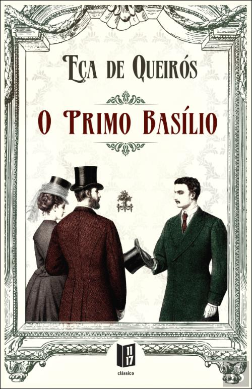

1.
"Os Maias (1888)": Considerado o ápice da maturidade literária de Eça, este romance aborda temas polêmicos para a época, como divórcio, suicídio e incesto.

2.
"O Crime do Padre Amaro (1875): ": Romance que marca o início do realismo em Portugal, criticando o celibato do clero e denunciando os excessos e desmandos da Igreja.

3. O Primo Basílio (1878): Analisa a vida da burguesia lisboeta, explorando adultério, desejo feminino e hipocrisia social.